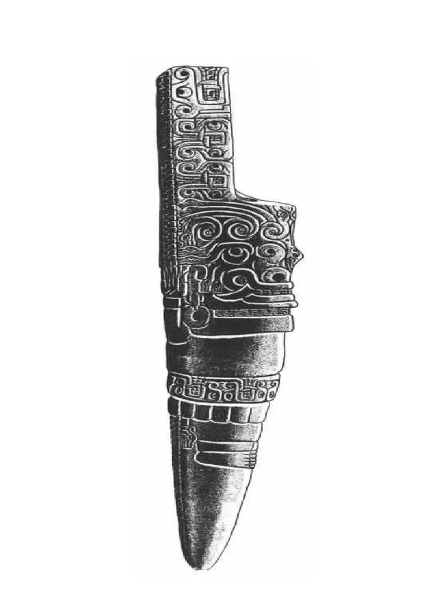

Reliquia 1

El Señor de Sipán
No es una sola pieza, sino el ajuar funerario completo de un gobernante Moche, destacando sus orejeras de oro y turquesa.
Fecha estimada: 300 d.C. (Aproximadamente, Cultura Moche).Análisis detallado de la cerámica escultórica y su importancia en los rituales funerarios del norte peruano.
Más información sobre las reliquias peruanas...
No es una sola pieza, sino el ajuar funerario completo de un gobernante Moche, destacando sus orejeras de oro y turquesa.
Fecha estimada: 300 d.C. (Aproximadamente, Cultura Moche).
Una escultura de granito de 4.5 metros situada en el centro del templo de Chavín de Huántar, que representa a una deidad antropomorfa con rasgos de felino.
Fecha estimada: 900 a.C. – 500 a.C. (Horizonte Temprano, Cultura Chavín).
Un cuchillo ceremonial de la cultura Lambayeque (o Chimú), con una empuñadura que representa a la deidad Naylamp, decorada con piedras preciosas.
Fecha estimada: 900 d.C. – 1100 d.C. (Cultura Lambayeque/Sicán).
Textiles de algodón y lana de camélido con bordados increíblemente detallados que han sobrevivido más de 2,000 años gracias a la aridez del desierto.
Fecha estimada: 500 a.C. – 200 d.C. (Cultura Paracas Necrópolis).
Una columna de piedra prismática esculpida con complejas figuras de caimanes, plantas y seres míticos de la cultura Chavín.
Fecha estimada: 800 a.C. – 400 a.C. (Cultura Chavín)..jpg)
Aunque son sistemas de cuerdas anudadas para contabilidad, los ejemplares complejos hallados en sitios como Caral o del periodo Inca se consideran reliquias fundamentales de su administración.
Fecha estimada: 1438 d.C. – 1533 d.C. (Horizonte Tardío, Imperio Inca).